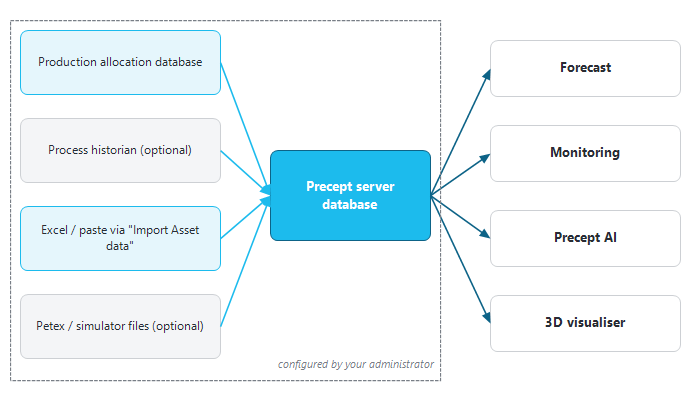

|
|
Where Precept's data comes from
1. Overview
Precept works with four kinds of data:
•The asset's measured data: allocated production and injection, well tests, daily operating data of producers and injectors, and reservoir pressures. It is read from your company's production allocation database, or loaded into Precept when direct access is not possible.
•High-frequency data from a process historian (time-stamped tag values), where your administrator has connected one.
•Data you load yourself, by pasting or from Excel: well trajectories, reservoir pressures, well tests, pattern and analogue data, profiles and scenarios.
•Precept's own database, on the Precept server: assets, projects and scenarios with all their inputs, forecast results, the asset model of the wells, well models, actions and settings.

Figure 1 — Data sources feeding Precept.
2. What is configured by your administrator
Each asset has a configuration, set up by your administrator (with Cleverfield) when the asset is created. Users do not see or edit it. It defines, among other things:
•where the asset's production allocation, well tests and daily data are read from, and whether allocated data is stored as cumulative volumes or as rates;
•the connection to a process historian, if any;
•the location of the asset's Prosper well models, if Prosper is used (see Petex GAP / Prosper and ECLIPSE links);
•the asset's units, for assets where they are fixed;
•the action categories of the Action Tracker.
Connections are secured and managed by your administrator; Precept never asks users for database credentials.
Which assets you can open, and whether you can edit, is set in Security / Access policy.
2.1 Checking the connections
When Precept starts, the "Checking Connection status and licenses" panel of the main window shows the "Connection to Production database", the "Connection to Precept server" and the "Licenses". If Precept cannot connect, most of the ribbon is hidden and the "Connection Checker" button is shown instead. It is a tool for your administrator; report the message you see to them. See also Installation.
3. What Precept reads, and how to load it
|
Data
|
Used for
|
Source / how to load it
|
|
Allocated production and injection, per well and per field
|
Production history in decline curves, monitoring, results ("historical"), material-balance history match
|
The production allocation database configured for the asset. Where the data is hosted by Precept: "Import Asset data" → "Import Allocated Wells Production (Cum)" or, for assets stored as rates, "Import Allocated Wells Production (Rate)", "Import Allocated Wells Water Injection (Rate)" and "Import Allocated Wells Gas Injection (Rate)". Assets stored as cumulative volumes also have "Import Allocated Field Production (Cum)" and the field water and gas injection equivalents.
|
|
Daily operating data of producers and injectors
|
Monitoring, well model update
|
The allocation database, or "Import Producers parameters", "Import Water Injectors parameters", "Import Gas Injectors parameters".
|
|
Well tests
|
Well model update, monitoring
|
The asset's well-test source. When the asset keeps its tests in Precept, "Import Well Tests" is offered. It replaces all the asset's tests with the pasted set; liquid, BSW and GOR are calculated from the rates when left blank, and wells unknown to the asset are flagged before saving.
|
|
Reservoir pressures
|
Monitoring, material-balance history match (
|
Material Balance
|
)
|
"Import Reservoir Pressures": one row per well and date, with "Reservoir Pressure at gauge depth" and/or "Reservoir Pressure at Datum", in the asset's pressure unit (gauge). A point with the same well and date replaces the existing one; all other points are kept. Points can also be added one by one in Production monitoring.
|
|
Well trajectories (measured depth, TVD, X, Y)
|
Well geometry and VLPs, maps, Precept AI charts
|
"Import Wells trajectories" (it replaces all the asset's trajectories), or per well in Set Well Geometry.
|
|
High-frequency tag data
|
Monitoring trends
|
The process historian connected by your administrator.
|
|
Asset model of the wells
|
Monitoring, well model update, Precept AI
|
The "Asset Model" window (section 4).
|
|
Patterns and analogues
|
Patterns and analogue screening
|
"Import Patterns …" and "Import Analogue …" options of "Import Asset data" (see
|
Patterns
|
and
|
Analogues
|
).
|
4. The "Asset Model" window
In the Field Monitoring window, click "Asset Model". The "Asset Model Monitoring" window lists the wells of the asset, one row per well. The columns include the well type, reservoir, location, artificial lift, producing interval and status ("Available" or "Abandoned"). Edit a cell and the change is saved straight away. The asset and well names are read-only.
This list is the monitoring view of the asset. The wells used in a forecast scenario are defined in the scenario's network (see Add wells to Asset Model).
5. Loading your own data — "Import Asset data"
1.In the Field Monitoring window, click "Import Asset data". The "Import Data" window opens.
2.Choose what to import in the list. The grid shows the expected columns. For well tests and reservoir pressures, "Asset" comes first: leave it blank for the open asset (a row for another asset is refused).
3.Paste the rows into the grid (Ctrl+V), or type the sheet name in "Excel sheet" and click "Load from Excel" to pick the workbook.
4.Check the rows, then click "Save". "Clear table" empties the grid.
Pay attention to what each import replaces (see the table in section 3). Some imports replace all the asset's rows of that kind. "Import any data" is an advanced option where the destination table name is typed in "Table name"; use it only as instructed by your administrator.
6. Units
•Precept supports oilfield and metric units. The unit system of a scenario is the "Unit" setting ("Oilfield" or "Metric") in Settings. For some assets, the units are fixed by the asset configuration.
•The chosen units are used for display, input and import: rates, pressures, lengths and ratios are entered in the asset's units, as shown next to each field.
•All pressures are gauge pressures, whether displayed, entered, imported or stored.
|
|